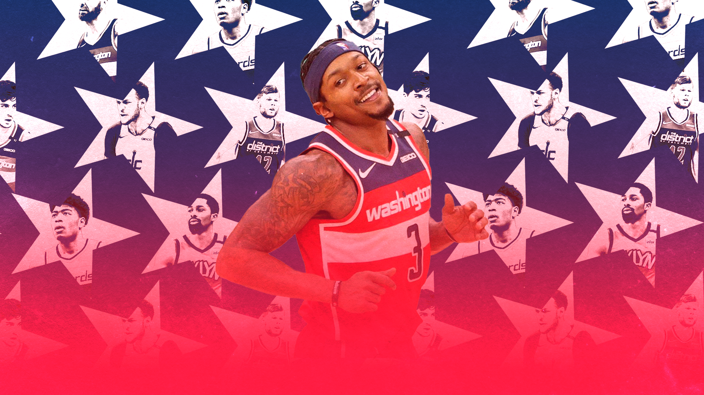

Before moving into a new era, it's only right to look back on a decade of Washington Wizards basketball.
Sean Carroll illustration
Before we move into the 2020s we must first look back at the 2010s. This decade in Washington Wizards basketball was defined by (drastically) below average coaching and John Wall’s health.
We start the 2009–2010 season with the late Flip Saunders, who had a 51–130 career record at the helm in the District of Columbia. Saunders took over after a 1–10 effort from Eddie Jordan (who?) which was followed by a 18–53 record from Ed Tapscott (no wait… WHO?!) the season prior.
he team was a textbook definition of a shitshow, highlighted by a locker room altercation where the high character Javaris Crittenton pointed a loaded gun at the ever-mature Gilbert Arenas, who had brought four unloaded guns for Crittenton, who is currently serving a 23-year manslaughter sentence, “as a joke”. This all happened over a $1,100 booray (or Bourré as they call it in Louisiana) dispute. So where do we go from here? Sorry, where the fuck do we go from here?
Flip’s time in the Capital was spent fostering a young and electric John Wall. Honestly, in retrospect, it’s fair enough that Flip went 51–130 in his two and a half seasons with Wall and company. Hell, it’s almost impressive he went that well after what he inherited, but the front office had seen enough, and it was time for the Randy Wittman era.
Boasting a 47 percent win rate, we had officially started the era where we don’t call bank, we call game. We had also begun the Wall/Beal era – a time in history that never really happened.
They led the Wizards in scoring in Beal’s inaugural campaign but played 49 (Wall) and 56 (Beal) games in the 2012–13 season. 2013–14, season two of Beal, saw him learning the ropes, with the potential of a great scoring guard clearly there. Meanwhile, 23-year-old (hey that’s how old I am) John Wall had just posted a 19 point, nine assist season without missing a game.
It’s worth noting that Marcin Gortat had yet to maximise his potential. An ability to catch the ball was still needed, as well as the need to impose himself more, defensively.
In 2014–15, Wall and Beal were top two in scoring for the Wizards, again, but Beal missed 20 games, starting the season injured, missing the middle of the season with injury, and in the time he was healthy, just trying to find some sort of rhythm. At this point of the story, Gortat still hadn’t maximised his potential; catch the ball please and thanks, also just an uptick defensively wouldn’t go amiss.
In 2015–16, Wall and Beal lead the Wiz in scoring again, but Beal missed 28 games and Wall missed a handful. Gortat still hadn’t realised his potential at this stage. We should have added some bonuses into his contract such as; $1,000,000 if his catches per 48 minutes > 1 and another $1,000,000 if he at least pretends to defend (I don’t know how we’ll judge this but that’s a job for another day, also, he probably won’t meet this demand).
Then 2016–17 rolls around and BOOM – 23.1 points and 10.7 assists per contest for the great Wall, netting him a cool equal seventh place in MVP voting in Scott Brooks’ first go around in the District. Oh, Scotty’s win rate during his time in the Capital? A cool touch below 40 percent. I think at this point we should explore Gortat’s other options. For anyone playing at home, he still hadn’t realised his potential.
The 2017–18 Wizards saw the beginning of the decline, as Wall played just 41 games, and followed that up with 32 in 2018–19, ending John Wall’s data in Basketball Reference for the Washington Wizards. So, there you have it, the backcourt that never was. Their only two seasons of good health occurred in their age 23 and 20 season, and the other season saw them both put up 23 points per, winning 49 games and being a 26-point Kelly Olynyk Game 7 away from an Eastern Conference Finals appearance.
The identity of this time in Wizards basketball history was waiting for Wall and Beal to be healthy at the same time. In a sport where those with the most experience are in a job for 18 years max, any season written off due to injury cannot be made up down the line, and any season spent waiting on injury is a season spent falling behind.
After the Wizards shed this identity, Russell Westbrook came and played for his number one fan and head coach, Scott Brooks, while everyone else stood around. The identity of this team was limbo.
This offseason the Wizards brought in head coach Wes Unseld Jr., who is lauded for his strong record as an in-game tactician along with his attention to detail on both sides of the ball combined with his reputation for player development and outstanding character. Unseld Jr. was also credited for his role in helping the development of MVP Nikola Jokic and rising star Jamal Murray. None of these things can be said for the coaches of the 2010s in the District, so that’s already a promising sign.
This offseason also saw the Wiz bring in Spencer Dinwiddie, Aaron Holiday, Kyle Kuzma, Montrezl Harrel and Kentavious Caldwell-Pope, as well as drafting Isaiah Todd, for the price of Westbrook, Chandler Hutchison and a couple of second round draft picks. With our own draft pick, we secured Corey Kispert, aka tHe nExT kLaY tHoMpSoN.
From the perspective of a naturally cautious person (I get that from Dante’s mum) who has supported the Wizards during the 2010s and until this very day, shedding Westbrook symbolises the end of the limbo era. Exhale.
My team got Kyle O’Boozma and I’m happy, think about that for a second. Usually, instead of having a personality, I’m just a Kuzma hater, and now I’m happy he’s on my team.
We have a bunch of interesting hipster favourite players and we have accepted a new identity – let’s see what Beal has success with. I’m not saying this is something to write home about, I’m just saying this is something. In other words, it’s not nothing.
I’m also not saying that if we have the same roster in three years it should be marked as a success, I know this team is going to change, I know I’m going to have to break up with a lot of 11-3 guys who I love because I once saw them fight over a screen in a blowout. But that’s the thing – I know.
Randy Wittman had a win rate of 47 percent, Scott Brooks didn’t crack 40 percent and he had a 49–33 season in that time, and let’s be generous and call it a 23 point and 11 assist per game season from Wall. Those were during seasons where we were supposed to be a good team, but we were instead stuck in limbo.
Now, we’re rebalancing, and retooling, around Brad. Yes, the expectation is low, but for the first time since I was a teenager, I’m excited to follow the Washington Wizards.